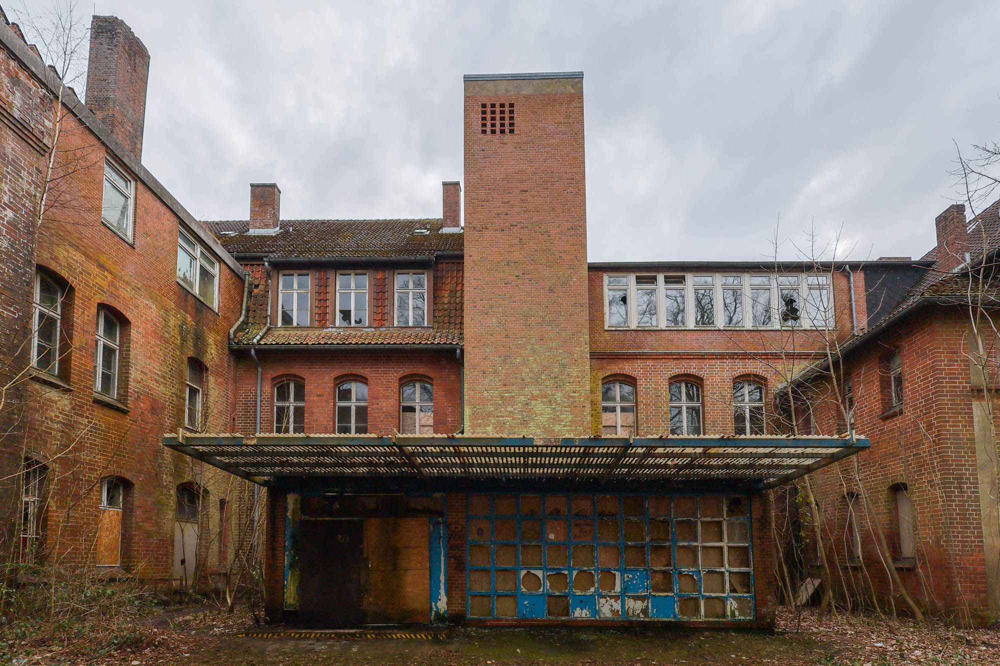
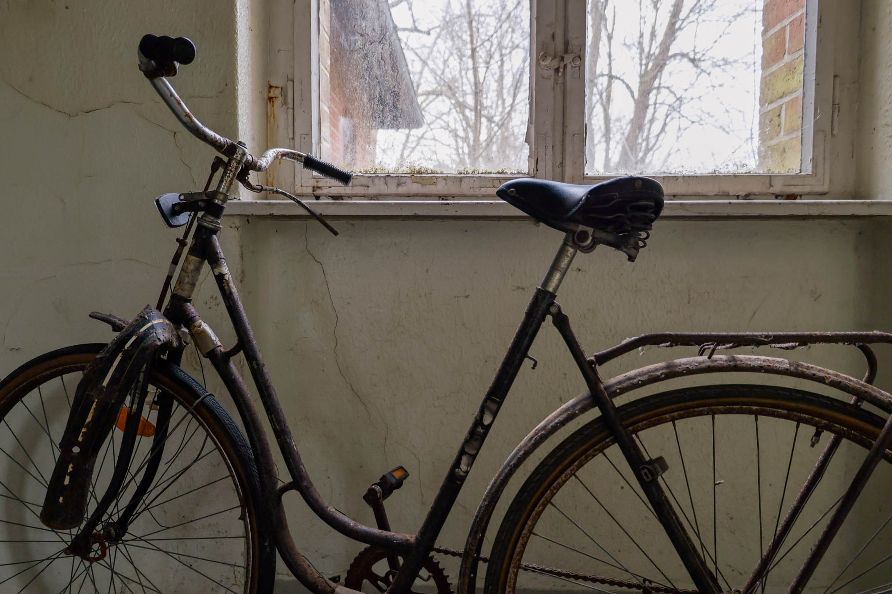
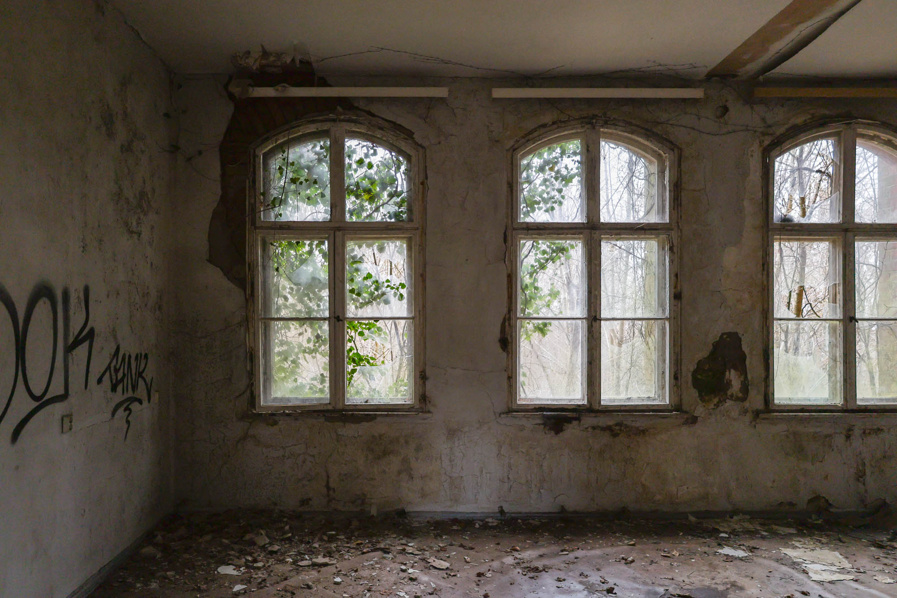
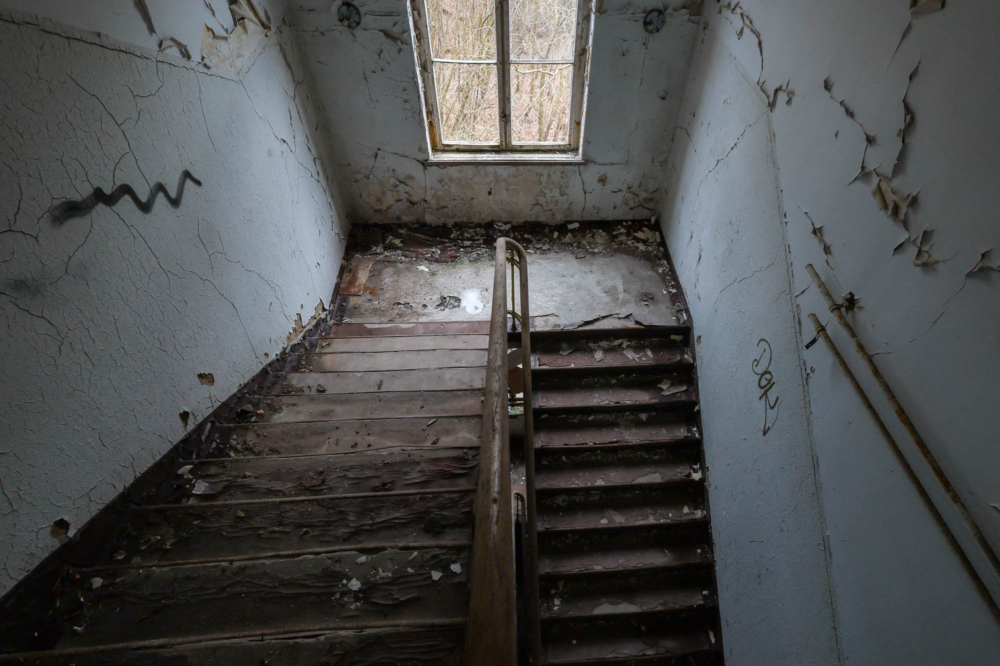
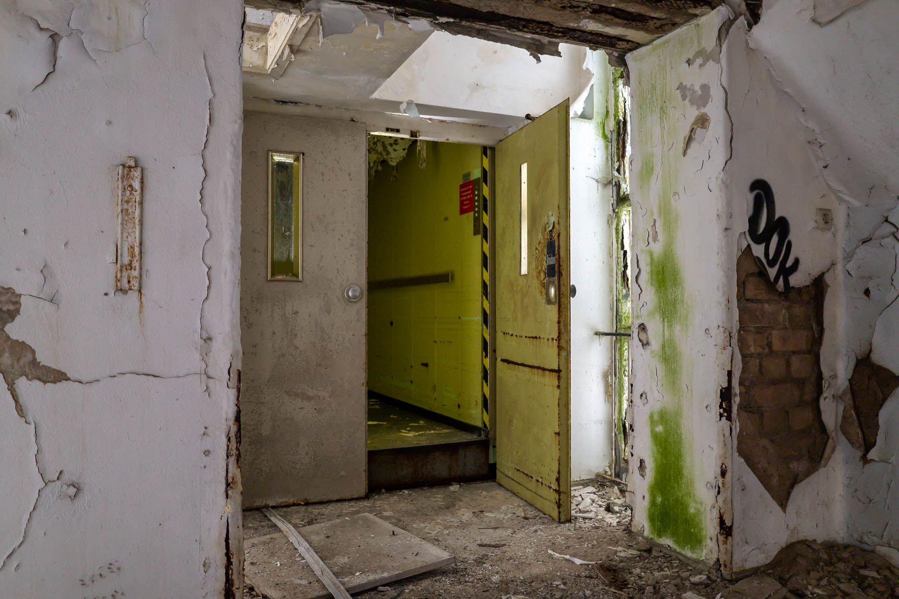

A historic hospital building, originally constructed in 1910. Over the years, it has served various purposes, including as a facility for the local naval school, a reserve hospital during the Nazis' war efforts, and, most recently, as Flensburg's Klinik Ost before closing in 1989. Today, the building remains in ruins, with redevelopment plans at a standstill.





